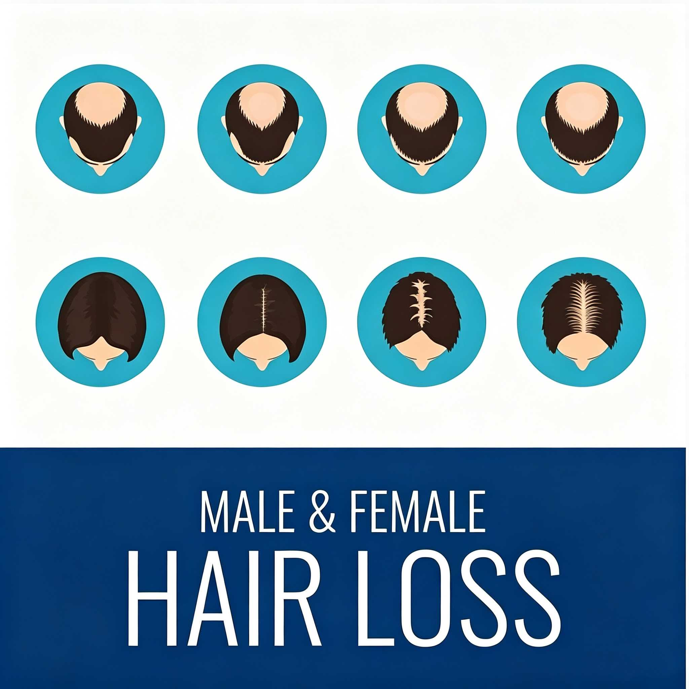

Understanding the Science Behind Pattern Baldness and Your Treatment Options
Get Free ConsultationIf you've noticed your hair thinning or your hairline receding, you might be wondering: is hair loss genetic? The short answer is yes — genetics plays a significant role in the most common type of hair loss, known as androgenetic alopecia (pattern baldness).
But it's not the only factor, and having a genetic predisposition doesn't mean you're destined to go bald. Modern treatments offer effective solutions for managing and reversing genetic hair loss.
Explore Treatment Options
Androgenetic alopecia affects approximately 50% of men and 25% of women by age 50. The primary culprit is dihydrotestosterone (DHT), which shrinks hair follicles in genetically predisposed individuals.
The androgen receptor gene on the X chromosome (inherited from mother) plays a significant role in male pattern baldness.
Multiple other genes from both parents contribute to overall risk, not just maternal inheritance.
Having a family history of baldness significantly increases your risk of experiencing hair loss.
Genes influence how sensitive your hair follicles are to DHT hormone, determining the extent of hair loss.
Genetic hair loss presents differently in men and women, requiring different treatment approaches
Even if hair loss runs in your family, you have effective options to address it
Common misconceptions about genetic hair loss, clarified
"If your mom's father is bald, you'll go bald too."
Fact: While the androgen receptor gene on the X chromosome (from the mother) is important, multiple genes from both parents contribute to your risk. Your father's side of the family matters too.
"Baldness is certain if your dad is bald."
Fact: Having a family history increases risk but doesn't ensure baldness. Many people with bald fathers maintain a full head of hair throughout their lives.
"Women don't experience pattern baldness."
Fact: Women make up about 40% of people with genetic hair loss. Female pattern baldness is common but often underdiagnosed.
"If it's in your genes, there's nothing you can do."
Fact: While you can't change your genes, you can successfully treat genetic hair loss. Hair transplant surgery provides long-lasting, natural-looking results.
Everyone's hair loss journey and solution are unique due to a variety of factors. Our hair restoration experts will assist you in determining the root cause and the best solution for your hair restoration plan. If you have any questions, please ask; we are happy to assist.
15810155700
+86 13730143529
hairtransplant@qq.com

Understanding hereditary hair loss and treatment options
Yes, approximately 95% of hair loss in men and 80% in women is genetic. Androgenetic alopecia (male/female pattern baldness) is inherited from both parents. The genes determine hair follicle sensitivity to DHT (dihydrotestosterone), which causes follicles to shrink over time.
While you can't change your genetics, early intervention can slow progression. FDA-approved medications like minoxidil and finasteride can help. For long-lasting restoration, Barley's microneedle hair transplant uses DHT-resistant donor hair that maintains growth for life, providing a lasting solution.
Genetic hair loss can begin as early as the late teens or early 20s, though it's more common in the 30s and 40s. By age 50, about 50% of men experience significant hair loss. Early signs include receding hairline, thinning at the crown, or overall hair density reduction.
No. Barley's surgeons harvest hair from the back and sides of your scalp - these areas are genetically resistant to DHT. This donor hair maintains its characteristics even when transplanted to balding areas, ensuring long-lasting, lifelong growth. This is why hair transplant is the gold standard for genetic hair loss.